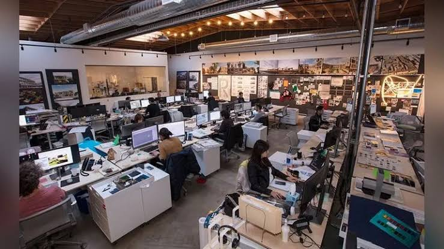
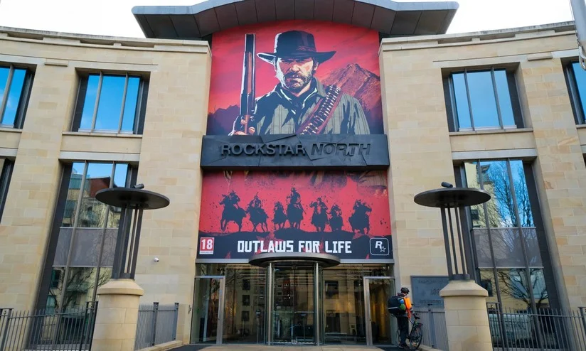
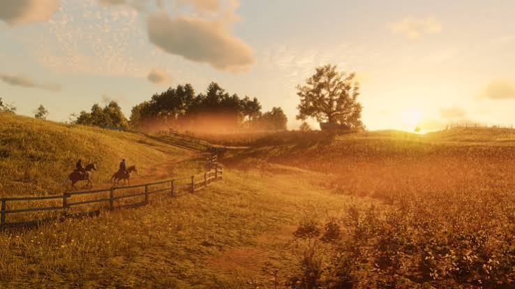

Um Esforço Global Sem Precedentes

O desenvolvimento de Red Dead Redemption 2 começou em 2010, logo após o lançamento do primeiro jogo. Pela primeira vez na história da empresa, a Rockstar Games decidiu não deixar o projeto a cargo de um único estúdio. Em vez disso, eles uniram todas as suas divisões ao redor do mundo, como Rockstar North, San Diego e Leeds, para formarem uma única e gigantesca equipe global conhecida simplesmente como Rockstar Studios.
O projeto durou mais de oito anos, tornando-se um dos ciclos de desenvolvimento mais longos e caros da história dos videogames. Estima-se que mais de 3.000 pessoas trabalharam no jogo de alguma forma. A ambição era criar o mundo aberto mais realista, reativo e imersivo já feito, o que exigiu a criação de novas tecnologias do zero e uma reestruturação completa da engine gráfica RAGE (Rockstar Advanced Game Engine).
Roteiro Épico e Captura de Movimento

A escala do roteiro de Red Dead Redemption 2 é colossal. A história principal abrange cerca de 2.000 páginas escritas pelo cofundador Dan Houser e sua equipe. Para dar vida a esse roteiro imenso, a Rockstar contratou mais de 1.200 atores. Destes, cerca de 700 tiveram falas e gravaram diálogos, resultando em impressionantes 500.000 linhas de diálogo dubladas para o jogo completo.
As sessões de captura de movimento (motion capture) começaram em 2013 e duraram um total de 2.200 dias de gravação. Os atores não apenas gravaram suas vozes, mas interpretaram cada cena fisicamente em estúdios especializados. Até os cavalos tiveram seus movimentos capturados para garantir que o galope e a reação dos animais fossem idênticos aos de um cavalo real. O objetivo era que as transições entre cenas de corte e o jogo fossem totalmente imperceptíveis.
Inteligência Artificial e Física Realista

Outro grande salto no desenvolvimento foi a Inteligência Artificial. Diferente de jogos anteriores onde os NPCs caminhavam sem rumo, em Red Dead Redemption 2 cada personagem não jogável possui uma rotina diária independente. Eles acordam, vão ao trabalho, comem, bebem no saloon e vão dormir. A forma como reagem a Arthur Morgan também mudou, exigindo um sistema de interação totalmente novo onde você pode saudar ou antagonizar qualquer pessoa no mapa.
A física também atingiu níveis absurdos. O sistema "Euphoria" foi atualizado para garantir animações procedimentais de quedas, tiros e impactos incrivelmente críveis. O clima dinâmico afeta o ambiente diretamente: a lama deforma com passos, o sangue seca nas roupas ao longo do tempo, e as armas precisam ser limpas regularmente para não travarem, tornando o mundo extremamente vivo e implacável.
Os Bastidores da Obra-Prima (Vídeo)
Assista abaixo para ver de perto o monumental trabalho de criação das animações, do mundo aberto e da captura de movimento que deu vida ao jogo.